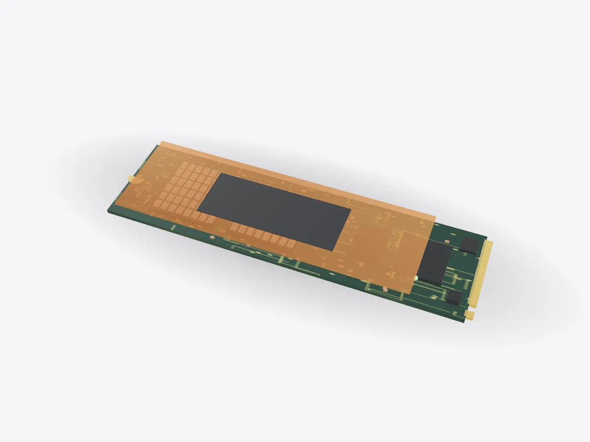

01 / 05
Overview
7 parts, one idea.
Explore an M.2 NVMe SSD in 3D: NAND flash, controller, DRAM cache, power circuits and edge connector. Write data and watch wear levelling spread it out.
Drag to orbit, pinch or scroll to zoom, tap any part.
How it works · Tech
No spinning disks, no moving parts: an SSD stores your files as trapped electrons, and a tiny controller decides where every bit goes.

Scores are saved on this device only.
01 / 05
Overview
Explore an M.2 NVMe SSD in 3D: NAND flash, controller, DRAM cache, power circuits and edge connector. Write data and watch wear levelling spread it out.
Drag to orbit, pinch or scroll to zoom, tap any part.
02 / 05
Explode
Keep scrolling and every part slides away from the centre, so you can see how they fit together.
03 / 05
Slice
A section plane sweeps through the model as you scroll. Pick an axis and set the depth yourself.
04 / 05
Parts
Pick a part or tap a glowing dot. It lights up and everything else fades back.
05 / 05
Facts
Fujio Masuoka invented flash memory at Toshiba in the 1980s.
Each TLC cell stores 3 bits using 8 charge levels.
22 mm wide, 80 mm long: the most common M.2 size.
Explained
A solid-state drive stores data in flash memory, with no moving parts. That's why it can find any file almost instantly, where a hard disk has to wait for a spinning platter and a moving head. The drive in this model is a generic M.2 2280 card, 22 millimetres wide and 80 millimetres long, of the kind used in most laptops and many desktops. It talks to the computer over PCI Express using the NVMe protocol.
On the board are three main kinds of chip. The NAND flash chips hold the data. The controller is a small processor that runs the drive. A DRAM chip, when there is one, holds the map that tells the controller where every block of data really lives. Power circuits and the gold edge connector complete the board.
Flash memory was invented by Fujio Masuoka at Toshiba in the 1980s. Each cell is a transistor with an extra layer that can hold electric charge, which stays put even with the power off. Reading the cell means measuring how much charge is there. A TLC cell distinguishes eight charge levels, so it stores three bits; QLC stores four bits using sixteen levels, which packs in more data but wears faster and is slower to write.
To fit more cells, modern flash stacks them in many layers inside each chip, like a skyscraper rather than a car park. Flash also has an unusual rule: data can be written in small pages but only erased in much larger blocks, so the controller is always reorganising data in the background.
Every flash cell wears out after a certain number of writes. If the computer kept rewriting the same file in the same place, those cells would fail early. So the controller never writes in place. It writes new data to the least-worn free block, updates its map and later erases the old block. Spreading writes evenly across the whole drive is called wear levelling, and it is why SSDs last for years of normal use.
The controller also corrects bit errors, retires bad blocks and keeps spare capacity in reserve. Open Play and use Write to save photos and copy a movie: each block lights up as it is written, and the wear range stays narrow because the least-worn block is always chosen next.
D3DDD
D3DDD makes them: product cutaways, exploded views, architectural renders and technical drawings.